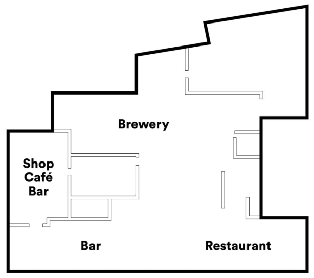

ABOUT US
The story of BRUS
BRUS is a brewpub by To Øl brewery. BRUS is a brewery, bar, bottleshop and restaurant in Nørrebro, where To Øl originally started their brewing adventures. A so-called brewpub, where the brew travel less than 20 meter from tanks to glass offering the arguably most fresh brew on the bridge!
In an old iron foundry and locomotive factory in Copenhagen, BRUS made the engines start running again. Brand new brewing facilities, specialty products, bar buzz and a kitchen team is breathing new life into the old warehouse; a 750m2 raw building with activities ranging from brewing, kegging, cooking, shopping, dining and drinking. It all comes together in a sum of quality, science, experiments and functionality to create a playful venue for beer-lovers, microbrewers and hungry souls who fancy some socializing city life.
The Danish name ‘BRUS’ refers to the sparkling quality liquid obtains when carbonated; the frizzy feeling of great brew. With production on-location, BRUS aims to be Copenhagen’s most ambitious microbrew projects to date.
Our mission is to create a lively location for beer geeks, tonic treasurers and food fans and to offer our guests a whole new experience of going to a brewpub. We want to bring the experimental approach from craft beer production on to a wider and wilder selection of micro-brewed beverages. We love testing new flavor compositions. We bring in the twining herb of hops to infuse our tonic, the aromatic scent of yuzu in our citrus fruit juice and fermentation techniques from craft beers on to a wider drink repertoire. You’re able to grab a quick bite before going to the cinema next door, but you can also stay seated for a full meal and when you recon it’s time to go home, slip by the shop for some bottle-shopping. You can get drunk in craft beers or die trying from all the frizzyness of our soft drink collection.
MEET BRUS
(VIDEO)